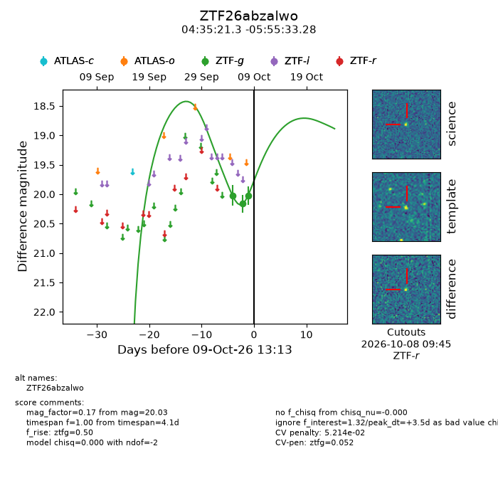
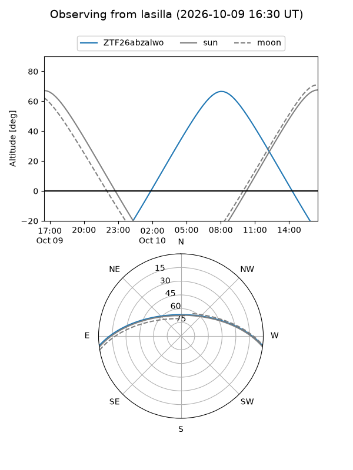
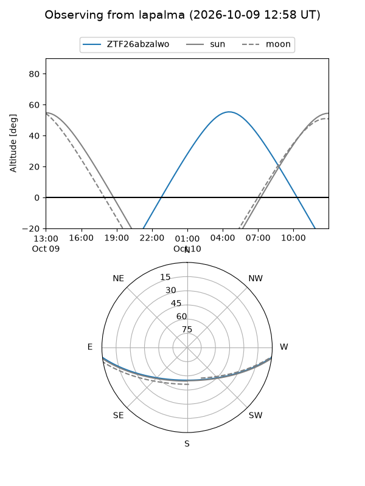
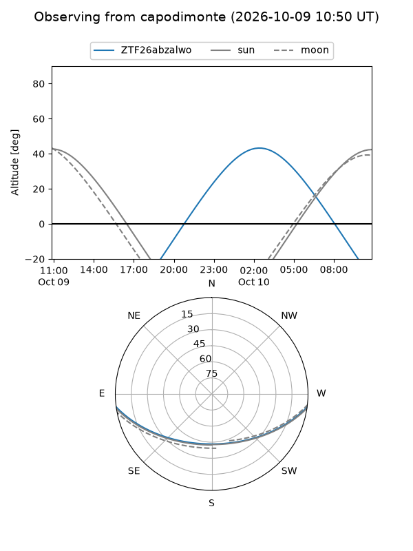
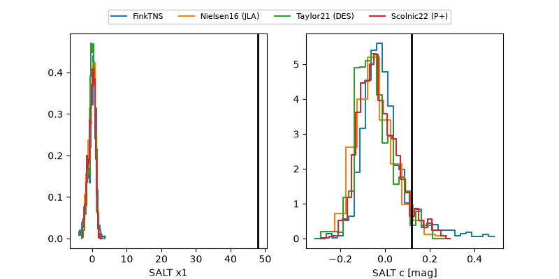

ZTF26abzalwo
Target ZTF26abzalwo at 2026-10-09 13:16
Aliases and brokers:
FINK-ZTF: ztf.fink-portal.org/ZTF26abzalwo
Lasair-ZTF: lasair-ztf.lsst.ac.uk/objects/ZTF26abzalwo
ALeRCE-ZTF: alerce.online/object/ZTF26abzalwo
Direct TNS query: direct search
alt names
ZTF26abzalwo (ztf,fink_ztf)
Coordinates:
equatorial (ra, dec) = 68.8389,-5.92591
equatorial (HMS+DMS) = 04:35:21.33,-05:55:33.28
galactic (l, b) = (201.8233,-32.84418)
Flags:
peak dt: +3.5
likely cv: !!
Photometry:
last ztfg=20.03
3 ztfg detections
Lightcurve

Visibility



Additional plots
